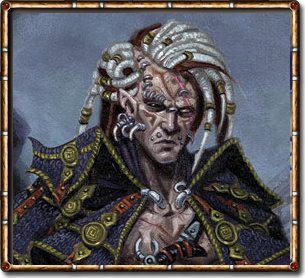
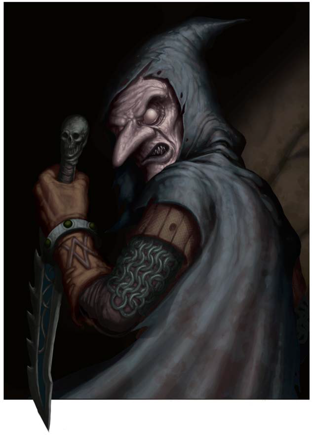
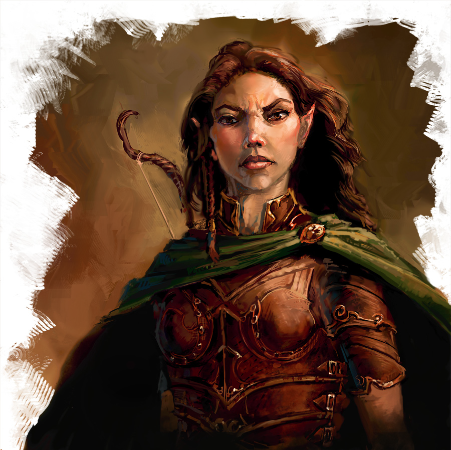
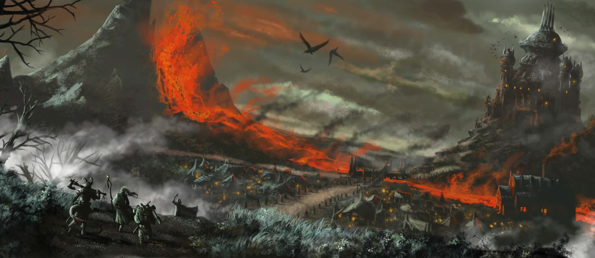
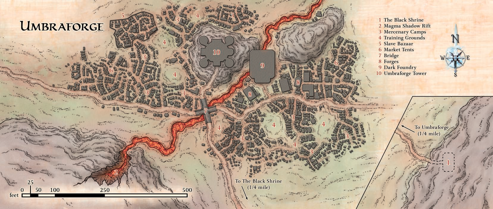
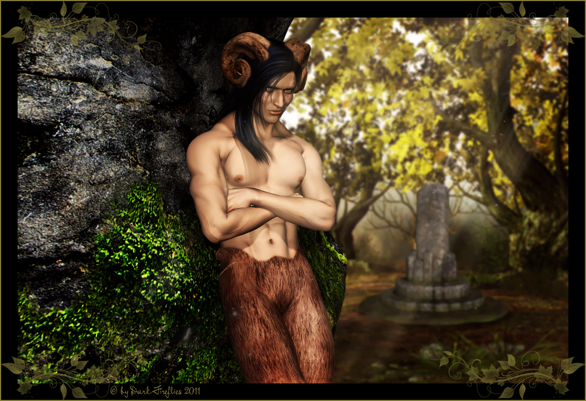
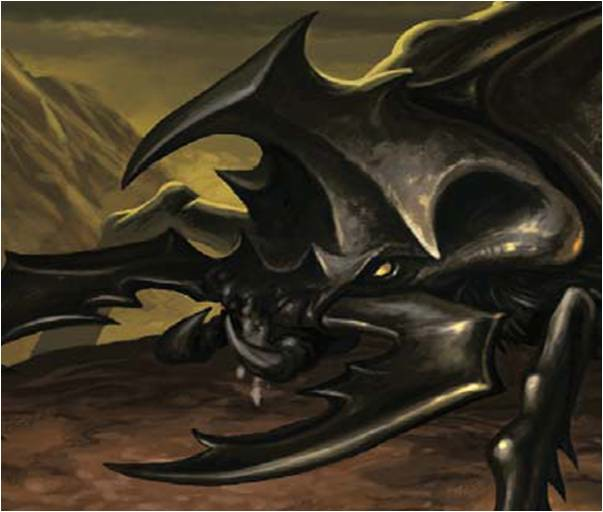

Previously our heroes discovered that dark creepers had sold arms and tactical intelligence to the orc war chief Tusk, aiding him in his attack against the folk of the Stonehome Mountains.
Sarshan is an opportunistic shadar-kai arms dealer. For years, he has built an invisible mercantile empire around the sale and brokering of weapons, armor, mercenaries, and intelligence from his domain in the Shadowfell.
In the past Modra (a lieutenant of the blackmarket arms dealer Sarshan) was approached by Tusk's advisor Myrissa, a shadar-kai witch who knew of Sarshan's operations. However, the success of Sarshan's arms running and mercenary services turned on his ability to maintain a low profile in his dealings with clients in the world. Sometimes this meant turning down jobs that run too much risk of exposure. Tusk's massive raid, aimed at the heart of the civilized frontier and a stone's throw from Sarshan's operations in the city of Overlook, was one of these.
When Sarshan rebuffed Myrissa's request, Modra approached the witch in secret. He struck a deal to supply Tusk with weapons and intelligence, sending in a group of his followers (the dark creepers in the Vents, including Iranda) to do the job. In going behind Sarshan's back, Modra expected that an overwhelming orc victory (won with the help of dark one subterfuge) would win his master's respect. However, with Tusk's forces routed and Modra's servants scattered or killed, the dark creeper had to go to ground to escape Sarshan's wrath.
Trapped in the natural world, Modra needed to reclaim Iranda's brass key - a key to a secret portal back to the Shadowfell. As our heroes began investigating the purpose of the key back in Overlook, Modra heard word of their efforts and hired the "Lost Ones" assassins to eliminate our heroes and retrieve the key. Underestimating the party, they not only survive the assassins' attack but manage wrest Modra's name from the survivor. Asking around about "Modra", our heroes learned the following:

- "The threat of the orcs might be ended after the siege of Bordrin's Watch, but word from the frontier is there's more trouble on the march. Just like Tusk's clan, the rabble of the mountains are getting their hands on good-grade weapons and armor, and they're looking to use it."
- "You get all races in Overlook, but the dark ones that pass through the city keep to themselves. More often than not, those you do see are in the company of Lost Ones bodyguards and enforcers."
- "Someone by the name 'Modra' was said to be buying information a few months back, looking for those with experience mining the old caverns of the Stonehome."
- "Modra is a dark creeper, and well known in the city's criminal underworld."
- "It's said that the dark creeper Modra brokers weapons and armor through the Overlook black markets."
- "Modra met up with a shadar-kai witch a month ago. Some said she was doing a deal for weapons, but she didn't look much like a warrior."
- "The far traders coming into Overlook talk of more and more trouble on the roads. They say the Red Hand of Doom was behind what happened in Brindol a few months past, but there's more cults than that on the rise across the frontier."
- "The dark creeper is just the front man for arms dealing in the city. No one knows who's behind the operation, but rumor says it's bigger than anyone in Overlook will ever know."
- "Modra was in the city three weeks past, but he was keeping a low profile. He had a squad of dark creepers with him, must have figured they'd stand out."
- "Last time anyone saw Modra was just before the raid on Bordrin's Watch. I heard he's been on the run since then. Some job that went bad."
Ensorcelled by a magical tankard she discovered in the Monastery of the Sundered Chain Kallista disappears during the investigation. But losing one member the party finds another character making similar lines of inquiry regarding the dark creeper Modra. The woman wore brown leather beneath a green cloak, and a longbow is slung across her chest. Quietly, she said
"I've heard word that there's a group in the city looking for someone named Modra. I'm doing the same, though I doubt it's for the same reasons. Perhaps we should compare notes."
This was Reniss, sister of the half-elf warlock Jen of the Farstriders. When Jen was slain in the Vents, she used a sending stone to whisper her last words to her sister, a name the Farstriders tripped across before they were cut down - "Modra...."
"I met a dark creeper close to death in the Clean Sheets, looking like he'd been in the fight to end them all. He said he'd been working for this Modra when it happened. For a quart of bad beer, he told me that if I was looking for Modra, I'd better be fast. Someone else is hunting him - someone looking to kill him. The creeper didn't know where Modra was, but he'd heard him talk about some Tradetown almshouse called the Happy Beggar."
Our heroes follow Reniss' clues to Tradetown, and the Happy Beggar, a single-story almshouse sandwiched between a warehouse block and a section of rundown tenements. What no one outside of a small number of dark one and shadar-kai operatives knew at the time is that the almshouse is owned by Sarshan, and it conceals the heart of his arms-running enterprise within the city.

Prashant and his wife Ausma ran the Happy Beggar on the proceeds of their former life as adventurers, unaware of the real purpose of the building. The atmosphere inside the Beggar was as dingy as the whitewash on the outside walls. A plain common room sits two dozen miserable-looking patrons, most asleep in their chairs or sipping at cracked mugs. A few double as volunteer staff, carrying steaming teapots from table to table. Behind what would be a bar in any other establishment, a dour-looking human woman in white robes boils water at a wood stove. A similarly attired male greets you as he limps up a flight of stairs across the room.
.png "Sarshan (in disguise)")
"Greetings and welcome. You are just in time for tea and songs of devotion. Please, join us!"
Among the sorry lot taking refuge at the Beggar our heroes discover Kallista, rescued by Prashant and Ausma from the gutter at the end of a near-terminal bender. While investigating, our heroes talked to an old man alone in a rickety chair, a hunched form in a tattered cloak. The old man appeared human or half-elf, but his face was deeply scarred by the ravages of disease. He coughs wetly into a grimy handkerchief and introduces himself as Brenat:
"I know the one you mean. A dark creeper, and none as dark as him, or so I've heard. Time was, he used the Happy Beggar as a meeting place, but I'd reckon he hasn't been seen here in two years or more. I ran him off one time myself. I might not look it, but I fought dark creepers in the mountains as a younger man, sellsword to a dozen lords. Much as yourselves, I'd wager. Adventurers all have a price, eh?"
This man was actually Sarshan in disguise, in Overlook on business and hunting Modra. When he deduced our heroes' intent, he figured he could have them take care of Modra for him:
"Wherever you find this Modra, heed me. He's a black-hearted one - make no mistake and strike no bargains with him. Kill him quickly before he gets the chance to return the favor."
Sarshan was not aware that our heroes possessed Iranda's key, and to his surprise they infiltrated his smuggling route in the basement of the Happy Beggar. Desperate to escape Sarshan, Modra did the same a step ahead of the party and stole another key from one of Sarshan's underlings to pass through the portal into the Shadowfell. Hot on Modra's heels, the party used Iranda's key to open the portal to Umbraforge, Sarshan's base of operations in the Shadowfell.
Modra left a trap on the portal that delayed the party's pursuit, and they arrive alone on the outskirts of Umbraforge, Sarshan's domain in the Shadowfell.
The land before our heroes was like nothing they'd ever seen before. A wide plain of gray-green grass and stunted black trees spread beneath a sky scoured by fast-moving clouds. The sun was bright above but somehow didn't cut the darkness that drapes every rock and every blade of grass in gray gloom. It was the Shadowfell. From the mouth of the cavern, a wide and well-traveled road runs in a curving line to the north. There, perhaps a quarter-mile away, a military camp spread. Buildings were scattered here and there, with tents and pavilions spreading between them. Torches and fires burned brightly against the ever-present shadow, and lone trees and tall stands of graygreen grass were whipped by a hissing wind. Looming above it all, a rise of black rock to the west was rent by a seething volcanic rift. Black-streaked lava coursed from it to descend into a narrow channel, and a permanent pall of glowing red-black smoke rose above it. Over this molten flow, a great stone bridge arched. This wide eastwest road met the road north from the cavern. North of the bridge, a tall tower stood and a lower building spread in its shadow.

The party approached the frontier of the mercenary camps unchallenged, and a virtual city spread out before them. Beneath patched canvas tents stood open-air taverns, market stalls, apothecaries and herbalists, weaponsmiths and armorers, butchers and greengrocers - all doing roaring trade. Training grounds opened up between the various camps, and soldiers of different races clashed against each other with sword and shield. In the quieter corners, they saw combat casters training - the flare of arcane fire dancing between them. But as they approached, they noticed with surprise that these were not Shadowfell mercenaries for the most part. Though shadar-kai and dark ones are well represented, the fields and camps were packed with orcs and hobgoblins, ogres and trolls, lizardfolk and kobolds and a dozen other monstrous races of the world.
Searching the camps for Modra, our heroes come across the following information:
"This is Umbraforge, dominion of Sarshan, a trader of great reputation and even greater wealth. The tower, foundry, and forges are his. The camps are those of the mercenaries and slaves whose services he sells across the Shadowfell and the world."
"Sarshan is shadar-kai, an outcast who made a name for himself as the leader of a legendary mercenary band known as the Black Arrow. At their height, the Arrow put so much fear in generals and kings alike that Sarshan would take payment to fight for one group, then take a bigger payment from their foe to stand down."
"Modra is known well in Umbraforge, but for all the wrong reasons now. He was one of Sarshan's trusted lieutenants before he tried to a broker a weapons deal that Sarshan had already turned down."
"The job that Sarshan refused was some orc king's raid on a dwarven citadel. Sarshan never makes a sale if it has a chance of coming back to him, and for good reason. This job went bad, they say, and people know that Modra sold the orc his weapons."
"Modra is long gone from Umbraforge and the Shadowfell, believe me. Sarshan's got a long arm and a longer memory. The creeper would have to be crazy to come back here."
"The foundry is the new jewel of Sarshan's operations. Its power comes from the fire and shadow driving its furnaces. Sarshan's sages create beasts of battle there, born killers with magic in their blood."
"It used to be that Sarshan brokered mercenaries mostly within the Shadowfell, but that's changing. Dark ones and shadar-kai are still his elite troops, but more and more, he brings creatures from the world to Umbraforge for training, then marches them off to places unknown."
"The Shadowfell is only a stopping-off place for Sarshan's mercenaries. A force of archons from the Elemental Chaos was here not six months ago. I saw githzerai from the Astral Sea in Umbraforge once. I don't know what job they took for Sarshan, but woe be to whoever got in their way."
"Sarshan's slave bazaar is about more than just servants and soldiers. His experiments in the foundry only begin with dumb beasts. He's building new soldier races there, born from the slaves he traffics."
"Sarshan's mercenary operations have tripled in size in months past, but it's not the Shadowfell they're fighting in. When his forces are bought and sent on the march, they're bound for portals to the world. Shadar-kai, dark ones, undead, giants, ogres, trolls, gnolls, orcs - Sarshan has the armies of two planes on the march. War is brewing in the world, but the forces that will fight it are moving into position in the Shadowfell, unseen."
Eventually our heroes were approached by the shadar-kai witch Leena, a lieutenant of Sarshan's and a former friend of Modra's. She wore a black cloak edged with adamantine beads, and she kept her long hair plaited to hang down her back. Gold piercings lined her ears and lower lip, and a black starburst tattoo enclosed her right eye. She has the following to say:
"Modra and I worked together for a time, but when he elected to go behind Sarshan's back, I told him we were done. I heard word of him in the camps even before you started asking around. He has a plan to disrupt Sarshan's operations by destroying the foundry, then the tower. Sarshan has a private tunnel connecting the two, and Modra is planning on venting the foundry's destructive energy there. A mass of mercenaries is moving out tonight. He'll be using that as cover when he goes inside. "Modra's made his bargain with fate, and honor decrees that he die for his betrayal. He won't get tears from me. But if Sarshan captures him, he'll die slowly. If it's you, I'll hope you make it quick."
Trailing Modra to the dark foundry, our heroes heard a claxon call of horns sound out from the west. A haze of red light glimmered against the clouds as the cascade of the magma shadow rift flared. As Leena predicted, a huge force of mercenaries was on the move, heading out along the east road. The area around the foundry was deserted; the guards at the tower and the bridge had turned eastward to watch as Sarshan's forces moved out.

Inside the foundry the red glow of the lava trench was shrouded by shifting clouds of shadow and steam. Huge stone vats with steel doors lined both sides of this massive chamber, where great arrangements of pipes and vents connected them. Half the creatures inside the vats are humanoids mutated into horrible warlike forms, their skin growing spiky armor plates, their hands turned to razor-sharp claws, and so on.

Two squads of what looked like hobgoblins, their bodies seemingly cloaked in shadow, worked there, supervised by another cloaked figure. They worked busily at two sections of pipe that diverted and channeled the lava flow. Closer to the door, two other shadowgoblins stood guard. Disguised as one of his minions, Modra spotted our heroes, snarled as he sprinted for the closest vat, pulling down on a great lever next to the door. He dodged out of the way of a blast of steam. As the door opened, it spilled a huge mass to the ground in a fountain of viscous green fluid. Out of it rose an enormous two-headed boar, bellowing as it clawed the ground.

His followers defeated and backed into a corner, Modra attempted to slip into a secret passage but Lechonero shot him down before he could escape. Driven to discover Sarshan's plans for the massive troop movements, our heroes follow the secret passage into the tower.
Our heroes exited the secret passage into an apparently library within the tower. Dim light filled the area from globes of gray glass set around the room. Shelves of books and scrolls line the walls there, and a large table covered with scrolls and bound volumes dominated an adjoining chamber. A female shadar-kai stood there, looking up in astonishment. Two shadar-kai warriors, katars at their belts, scrambled away from the door in surprise. A third warrior is digging through books on a nearby shelf, his greatsword leaning against the wall a few feet away.
After dispatching Sarshan's guards, the party explored deeper into the tower and heard growling voices punctuated by yipping snarls beyond a door. Inside were a pair of adjoining rooms that appeared to be well-appointed guest chambers. Unfortunately, the occupants seemed ill-suited to their comforts. Four gnolls emissaries from the Wicked Fang tribe were there, and a reek of dog filled the air and the blankets on the beds had been pulled off and piled in the corners. The closest two snarled as they lunged at the party with spear and claw, and the others fired their longbows as they took cover behind a couch.
After slaying the gnolls and further exploring the tower, the party discovered two captives held prisoner in cells not much less comfortably furnished than the guest rooms for the gnolls:
Freed from their cells the prisoners joined our heroes. While continuing their search of the tower, the party started to notice tremors occasionally shaking the tower. While attempting to get high on the visage of the strange trees in the 2nd floor tower garden Karrion discovered the psychic levitation lift passing up through the center of the tower. As the party floated upstairs, dim light from globes of gray glass casts faint shadows throughout the dark garden. Though the trees and other foliage there appeared healthy and luxurious, the leaves, stems, and flowers of the plants were sickly shades of dark blue, gray, and black. Along the south wall of the chamber stood a stone arch identical to the teleportation portals the party used to reach Umbraforge. As Festivus attempted to inspect the portal - finding it locked - a hissing sound preceded a cloud of insects suddenly boiling up from the shadows, swarming to attack. At the same time, what appeared to be a mass of mottled leaves rose up to reveal itself as an enormous beetle with viscous black fluid dripping from its joints as it lurches toward them.
The party dispatched the swarm of insects and Lechonero, Barases, and Karrion put their animal handling skills to the test and tamed the Shadow Beetle. Lechonero kept the beetle as a pet and named him Ringo.
Taking the lift to the top of the tower, our heroes surprised a squad of Sarshan's personal guard at practice which raised a general alarm. Waves of shadar-kai guards streamed in from the main hall below and our heroes, nearly overwhelmed, were forced to retreat to a dead end at the top of the tower - Sarshan's personal quarters. Festivus bought the party some time by dismissing her floating disc - covered in hundreds of pounds of looted, sharp weapons - at the top of the tower shaft, burying a group of guard ascending the lift. In their few spare moments the group frantically searchesd the room for escape or ideas. Escape was not fortcoming, but they did discover some of Sarshan's notes among his possessions. Chief among these notes were obscure references to a place of lost riches - obscure references to the Karak Mines that ultimately help Bram Ironfell determine the location of the lost mines.
Eventually the shadar-kai were too numerous to resist, led by their grizzled captain Thannu, who had ritual scars standing out on his cheeks. Two umbral panthers moved at his side with teeth bared as they hissed. Despite the overwhelming numbers, our heroes were dug in hard at the top of the tower, leading Thannu to yell:
"Stand down! Or your lives are forfeit!"
Suddenly, the garden was illuminated by a pulse of white light. The archway to the south flared as it revealed the black shrine under the Happy Beggar, and a familiar figure stepped from that chamber to this. It was the veteran our heroes spoke to in the Happy Beggar, but he was no longer stooped with the appearance of age and his scarred skin turned gray before their eyes.
The guards around the party saluted the shadar-kai, who didn't hide his surprise at seeing them. He took in the scene before him with a cold eye.
"I am Sarshan. I assume someone has an explanation for this?"
Thannu delivered a quick, military-style report to Sarshan concerning the party's incursion into the tower, along with the number of dead and wounded. Even as the captain finished, a warrior entered at a run, calling to his master. As he approached to whisper in Sarshan's ear, the shadar-kai turned to the party with a look of wonder.
"You are, quite literally, the last people I ever expected to see here. The charges leveled by my captain warrant torture and death. However, I am told that an episode of sabotage in my foundry appears to have been thwarted, and that the traitorous Modra has been executed by persons unknown. What might you know of this?"
After taking credit for dispatching Modra, Sarshan nodded thoughtfully.
"As far as you've managed to infiltrate my operations, I can only assume you know a little of who I am. My wealth and reputation turn largely on honor, obligation, and secrecy. When I spoke to you of Modra, I hoped you would kill him and save me the risk of more exposure than he had already caused. The fact that you journeyed here to do the job is a surprise, but for your part in ending his threat to me and whatever he meant to do in the foundry, I am in your debt. However, for your role in the death of my personal guards, you are more greatly in mine. Here is a bargain that balances the obligation for all of us. Join me...
We are mercenaries, all of us, but only a precious few have honesty enough to admit it. Whether we sell ourselves for coin, for honor, or ideals, we all have a price whose continued payment leads us inevitably to our end. But when that end comes, will you admit to your balance sheet? Or will you lie when you claim that the blood on your hands was spilled for just cause, not simply your hunger for glory?
Your skill at arms is clearly first rate. I offer you a place to use and advance that skill. Moreover, I offer you a place where you might live long enough to enjoy the fruits of your bravery. In a month, or six, or a year, your world will be a place you will not want to live. Join me here instead...
Though I am nicely positioned to take advantage of these things, I know relatively little yet. What I do know, I cannot share for professional reasons, but trust me when I say that you do not want to know. Name your choice, friends."
With few options, our heroes reluctantly accepted Sarshan's offer. At that moment they felt a familiar shaking beneath their feet as another tremor rose and fell quickly. Then suddenly, an ear-splitting explosion shook the tower. Near the eastern side of the chamber, one of Sarshan's guards shouted out:
"My lord! The foundry is in flames!"
The guards sprang into motion, Sarshan all but ignoring our heroes as he barked orders. One group was sent to the foundry, and another received orders to keep the mercenary camps under control. Sarshan took a last squad of chainfighters with him as he moved for the lift. Thannu and his panthers were the only ones left with the party. Bitterness at the men under his command dead at our heroes hands he confronted them before attacking:
"If I was as cruel as my reputation implies, I would send you back to watch your world die. Be thankful that I am merciful."
Drained by their earlier battles, our heroes barely survived the encounter with Thannu. From the south windows, Camulos describes the chaos in the camps as mercenary bands try to pull back from the destruction. The pens of the slave bazaar were broken open, and the slaves had overthrown their masters and started fleeing to the north. Peering out the eastern windows Lechonero warned that the foundry was being consumed by ongoing explosions of shadow and flame. Thanks to Modra's sabotage the foundry's systems have failed, releasing the arcane energy that fuels Sarshan's dark experiments and threatening to destroy the tower. Unable to escape through the heavily guarded front doors, Festivus frantically raced against time to unlock Sarshan's private portal in the tower gardens. Just before the foundry explosions consumed the tower and collapsed the portal, she managed to open the way and our heroes tumbled through back to the world and Overlook.
The noise of the explosion was heard in the Happy Beggar, with Prashant and Ausma discovering the secret cellar and the route the party took into the caverns below. They arrived just as the our heroes are cleaning up and were astounded to discover what lies beneath their establishment.
The paladins took care of contacting the Overlook authorities. While they waited for the city guard to arrive, our heroes confirmed that the Shadowfell gate has been permanently destroyed. Sarshan's route into Overlook had been shut down for good. With their religious background, Ausma and Prashant recognized the area as a place of ancient demon worship. They concluded that the dark power that created the specters had festered within both sides of the Shadowfell archway all this time - a potentially grave danger to Overlook that our heroes had eliminated. The teleportation portal was still operational, but it could be shut down by representatives of the Council.
The discovery and destruction of the Shadowfell gate makes the party heroes in Overlook, especially when Sarshan's connection to the recent orc raid was revealed. The shadar-kai's warehouses were raided, but in the aftermath of Modra's treachery, Sarshan had been careful to clean up any evidence of his recent activities. Though his operations are shut down for good, no further information on the shadar-kai's presence in Overlook could be found.